Tri-state bus sizing and topology design
n=6;
m=15;
beta = 0.5;
alpha = 1;
G0 = 1;
C0 = 10;
wmax = 1;
xpos = [ 0 1 6 8 -4 -1 ;
0 -1 4 -2 1 4 ] ;
X11 = repmat(xpos(1,:),n,1);
X12 = repmat(xpos(1,:)',1,n);
X21 = repmat(xpos(2,:),n,1);
X22 = repmat(xpos(2,:)',1,n);
LL = abs(X11-X12) + abs(X21-X22);
L = tril(LL);
L = L(find(L>0));
CC = zeros(n,n,m+1);
GG = zeros(n,n,m+1);
CC(:,:,1) = C0 * eye(n);
k3 = 1;
for k1 = 1 : 5,
for k2 = k1 + 1 : 6,
CC([k1,k2],[k1,k2],k3) = beta *[1, 0; 0,1]*L(k3);
GG([k1,k2],[k1,k2],k3) = alpha*[1,-1;-1,1]/L(k3);
k3 = k3 + 1;
end
end
GG = reshape( GG, n*n, m+1 );
CC = reshape( CC, n*n, m+1 );
npts = 50;
delays = linspace( 410, 2000, npts );
xdelays = [ 410, 2000 ];
xnpts = length(xdelays);
areas = zeros(1,npts);
xareas = zeros(1,xnpts);
sizes = zeros(m,xnpts);
for i = 1 : npts + xnpts,
if i > npts,
xi = i - npts;
delay = xdelays(xi);
disp( sprintf( 'Particular solution %d of %d (Tmax = %g)', xi, xnpts, delay ) );
else
delay = delays(i);
disp( sprintf( 'Point %d of %d on the tradeoff curve (Tmax = %g)', i, npts, delay ) );
end
cvx_begin sdp quiet
variable x(m)
variable G(n,n) symmetric
variable C(n,n) symmetric
minimize( L'*x )
G == reshape( GG * [ 1 ; x ], n, n );
C == reshape( CC * [ 1 ; x ], n, n );
for k = 1 : n,
delay * G - C + sparse(k,k,delay,n,n) >= 0;
end
x >= 0;
x <= wmax;
cvx_end
if i <= npts,
areas(i) = cvx_optval;
else
xareas(xi) = cvx_optval;
sizes(:,xi) = x;
T = linspace(0,2*delay,1000);
for inp = 1 : 6,
figure(6*xi-5+inp);
GQ = G + sparse(inp,inp,delay,n,n);
A = -inv(C)*GQ;
B = -A*ones(n,1);
Y = simple_step(A,B,T(2),length(T));
hold off; plot(T,Y,'-'); hold on;
ind=0;
for j=1:size(Y,1),
ind = max(min(find(Y(j,:)>=0.5)),ind);
end
tdom = max(eig(inv(GQ)*C));
elmore = max(sum((inv(GQ)*C)'));
tthres = T(ind);
plot( tdom * [1;1], [0;1], '--', ...
elmore * [1;1], [0;1], '--', ...
tthres * [1;1], [0;1], '--');
text(tdom, 0,'d');
text(elmore,0,'e');
text(tthres,0,'t');
ylabel('Voltage');
title(sprintf('Step response for solution %d, Tmax=%d, with switch %d is closed',xi,delay,inp));
end
end
end;
figure(1)
ind = isfinite(areas);
plot(areas(ind), delays(ind));
xlabel('Area');
ylabel('Tdom');
title('Area-delay tradeoff curve');
hold on
for k = 1 : xnpts,
text( xareas(k), xdelays(k), sprintf( '(%d)', k ) );
end
Point 1 of 50 on the tradeoff curve (Tmax = 410)
Point 2 of 50 on the tradeoff curve (Tmax = 442.449)
Point 3 of 50 on the tradeoff curve (Tmax = 474.898)
Point 4 of 50 on the tradeoff curve (Tmax = 507.347)
Point 5 of 50 on the tradeoff curve (Tmax = 539.796)
Point 6 of 50 on the tradeoff curve (Tmax = 572.245)
Point 7 of 50 on the tradeoff curve (Tmax = 604.694)
Point 8 of 50 on the tradeoff curve (Tmax = 637.143)
Point 9 of 50 on the tradeoff curve (Tmax = 669.592)
Point 10 of 50 on the tradeoff curve (Tmax = 702.041)
Point 11 of 50 on the tradeoff curve (Tmax = 734.49)
Point 12 of 50 on the tradeoff curve (Tmax = 766.939)
Point 13 of 50 on the tradeoff curve (Tmax = 799.388)
Point 14 of 50 on the tradeoff curve (Tmax = 831.837)
Point 15 of 50 on the tradeoff curve (Tmax = 864.286)
Point 16 of 50 on the tradeoff curve (Tmax = 896.735)
Point 17 of 50 on the tradeoff curve (Tmax = 929.184)
Point 18 of 50 on the tradeoff curve (Tmax = 961.633)
Point 19 of 50 on the tradeoff curve (Tmax = 994.082)
Point 20 of 50 on the tradeoff curve (Tmax = 1026.53)
Point 21 of 50 on the tradeoff curve (Tmax = 1058.98)
Point 22 of 50 on the tradeoff curve (Tmax = 1091.43)
Point 23 of 50 on the tradeoff curve (Tmax = 1123.88)
Point 24 of 50 on the tradeoff curve (Tmax = 1156.33)
Point 25 of 50 on the tradeoff curve (Tmax = 1188.78)
Point 26 of 50 on the tradeoff curve (Tmax = 1221.22)
Point 27 of 50 on the tradeoff curve (Tmax = 1253.67)
Point 28 of 50 on the tradeoff curve (Tmax = 1286.12)
Point 29 of 50 on the tradeoff curve (Tmax = 1318.57)
Point 30 of 50 on the tradeoff curve (Tmax = 1351.02)
Point 31 of 50 on the tradeoff curve (Tmax = 1383.47)
Point 32 of 50 on the tradeoff curve (Tmax = 1415.92)
Point 33 of 50 on the tradeoff curve (Tmax = 1448.37)
Point 34 of 50 on the tradeoff curve (Tmax = 1480.82)
Point 35 of 50 on the tradeoff curve (Tmax = 1513.27)
Point 36 of 50 on the tradeoff curve (Tmax = 1545.71)
Point 37 of 50 on the tradeoff curve (Tmax = 1578.16)
Point 38 of 50 on the tradeoff curve (Tmax = 1610.61)
Point 39 of 50 on the tradeoff curve (Tmax = 1643.06)
Point 40 of 50 on the tradeoff curve (Tmax = 1675.51)
Point 41 of 50 on the tradeoff curve (Tmax = 1707.96)
Point 42 of 50 on the tradeoff curve (Tmax = 1740.41)
Point 43 of 50 on the tradeoff curve (Tmax = 1772.86)
Point 44 of 50 on the tradeoff curve (Tmax = 1805.31)
Point 45 of 50 on the tradeoff curve (Tmax = 1837.76)
Point 46 of 50 on the tradeoff curve (Tmax = 1870.2)
Point 47 of 50 on the tradeoff curve (Tmax = 1902.65)
Point 48 of 50 on the tradeoff curve (Tmax = 1935.1)
Point 49 of 50 on the tradeoff curve (Tmax = 1967.55)
Point 50 of 50 on the tradeoff curve (Tmax = 2000)
Particular solution 1 of 2 (Tmax = 410)
Particular solution 2 of 2 (Tmax = 2000)
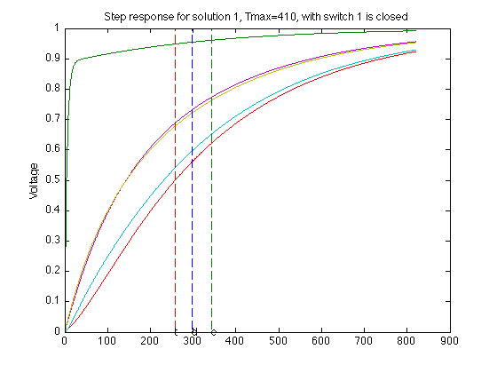 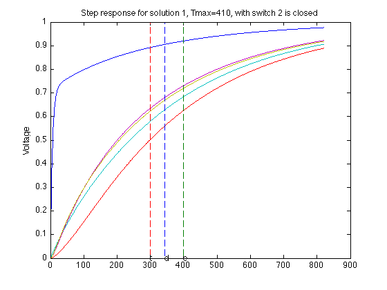 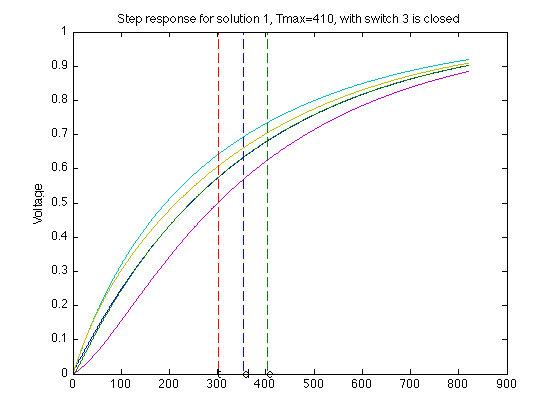 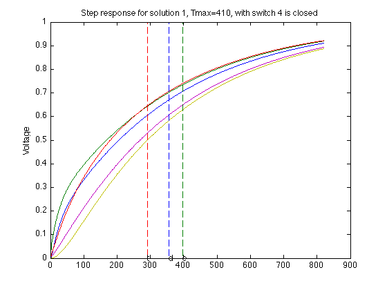 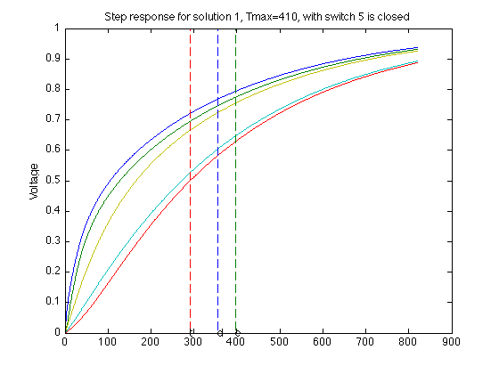 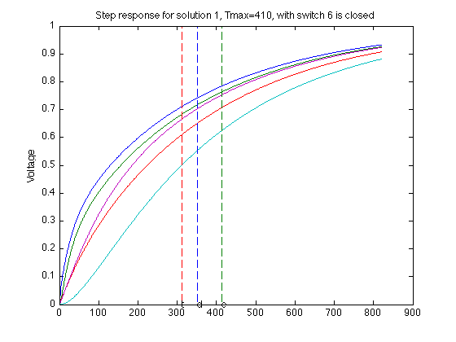 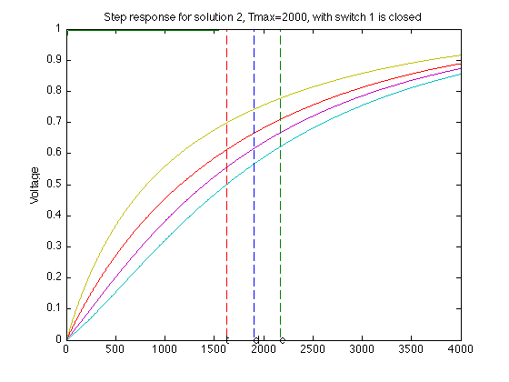 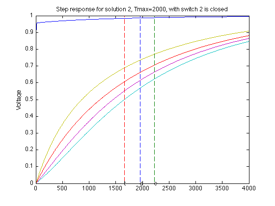 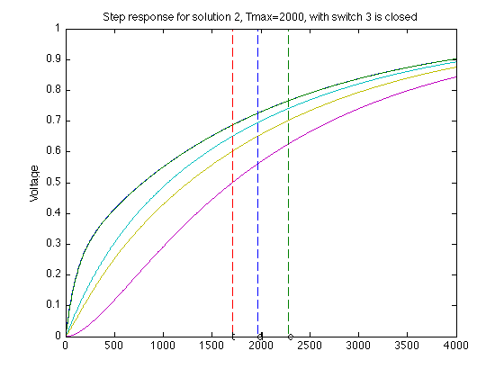 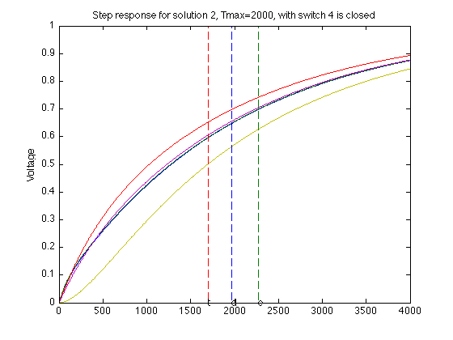 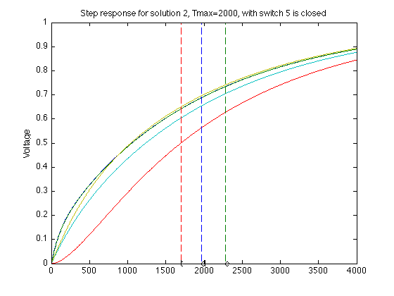 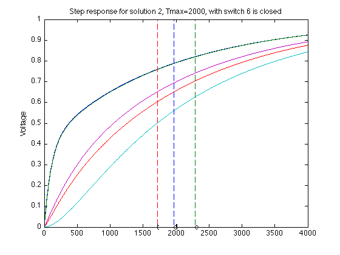 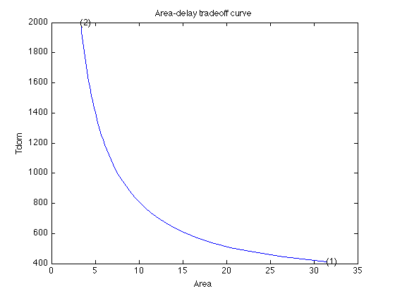